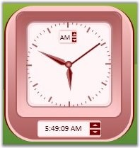

Position of the AMPMSelector of the Clock control is set using the AMPMSelectorPosition property. It can be positioned to the Top, Bottom, Left and Right of the Clock control.
The following code snippet positions the AMPMSelector to the Top.
|
[XAML]
<sftools:Clock Name="ctlClock" AMPMSelectorPosition="Top" > </sftools:Clock> |
|
[C#]
ctlClock.AMPMSelectorPosition=Clock.Position.Top; |

Figure 142: AMPMSelectorPosition = "Top"
To position the AMPMSelector to the Left, use the below code.
|
[XAML]
<sftools:Clock Name="ctlClock" AMPMSelectorPosition="Left" > </sftools:Clock> |
|
[C#]
ctlClock.AMPMSelectorPosition = Clock.Position.Left; |
Figure 143: AMPMSelectorPosition = "Left"